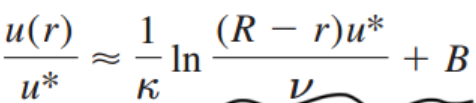
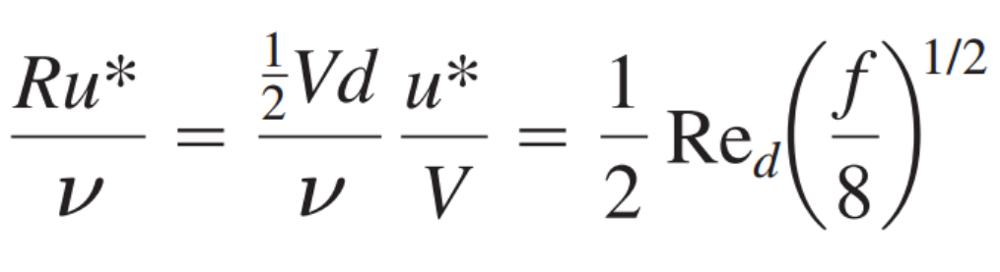
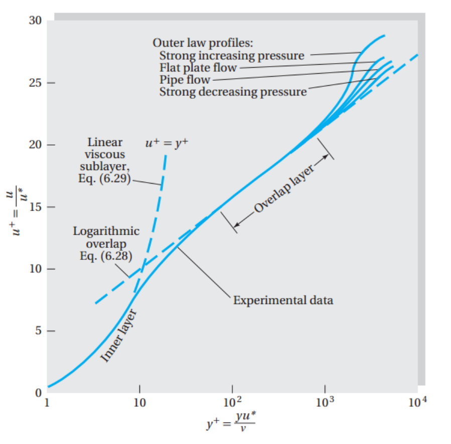

지금까지 유체의 흐름을
수학적으로 어떻게 표현 할 것인지에 대해서 배워왔다.
이제 크게
Internal vs External로
두가지 환경에서 유체의 흐름을 계산해보자.
Ch 6 에서는 그중에서 Internal Flow를 다룰 예정이다
.
시작은
Head loss - the friction factor
https://jeffdissel.tistory.com/7
[Gas Dynamics] Ch 3 Internal flow friction factor
유체역학 Internal flow 에서 다룰 내용이지만 여기서도 다루보겠습니다. Steady state 1-D pipe internal flow 에서 마찰력이 어떻게 유동에 영향을 주는지를 Infinitesimal Control volume 으로 분석해보자 가장먼저
jeffdissel.tistory.com
유도식에 관한 증명들은 이전,
Gas dynamics 에서 다루었었다.
요약하자면, 우리는 Steady state, 1-D, incompressible flow에서
Energy equation eq, momentum eq을 통해서, 마찰에 의한 에너지 손실(Head loss: hf)를
다음과 같이 유도하였다.
![[Fluid mechanics] Ch 6. Viscous Flow in Ducts - Moody chart](./images/img-001.png)
그리고,
Julius Weisbach
는,
관을 흐르는 유체의 에너지손실은
L/d, V^2 과 비례한다는 것을 실험적으로 확인하였다.
+
Henry Dracy
는 dimensionless 비례상수, f 는
f = function(Re, e/d, duct shape)
이 3가지 요소에 의해서 결정된다고 증명하였다.
Re: Pipe reynolds number
e/d: wall roughness/diameter
duchshape: 내부관의 모양
따라서,
![[Fluid mechanics] Ch 6. Viscous Flow in Ducts - Moody chart](./images/img-002.png)
여기서 friction factor는 Laminar flow, turbulent flow이냐로 구분해서 봐야한다.
그 이유는 살펴보면서 알아보자.
1. Laminar flow
Fully developed laminar flow의 경우,
Poiseuille flow를 통해서, 우리는 u = u max (1- radius ratio^2)로 표현 할 수 있다.
Poiseuille flow식의 경우, Momentum continuity eq을 통해서
파이프 내부에서 반지름에 따른 속도 식 derive가능.
따라서, average velocity, V를 통해 head loss를 derive할 수 있다.
![[Fluid mechanics] Ch 6. Viscous Flow in Ducts - Moody chart](./images/img-003.png)
그렇다면, friction factor는
![[Fluid mechanics] Ch 6. Viscous Flow in Ducts - Moody chart](./images/img-004.png)
2. Tubulent flow
난류의 경우, 우리는 Law of the wall식을 사용해야 한다.
왜냐하면 위 Laminar 처럼 단순한, 속도에 관한 식이 없기 때문이다.
Law of the wall (y = R - r)

![[Fluid mechanics] Ch 6. Viscous Flow in Ducts - Moody chart](./images/img-006.png)
이 식에 이제 u* (friction velocity) 정의를 이용하면 변수들을 f에 관한 식으로 변환 할 수 있다.
![[Fluid mechanics] Ch 6. Viscous Flow in Ducts - Moody chart](./images/img-007.png)

그리고 다시 원래 식에 대입해준다면.
다음과 같은, Re와 f의 식이 도출된다.
따라서, 우리는 Re를 통해서 f를 유도할 수 있다.
![[Fluid mechanics] Ch 6. Viscous Flow in Ducts - Moody chart](./images/img-009.png)
하지만, 한가지 더 고려할 점이 있다.
바로, Roughness of the wall.
그림과 같이, wall rougness의 높이가 viscous sublayer과 일치한다고 가정해보자.
![[Fluid mechanics] Ch 6. Viscous Flow in Ducts - Moody chart](./images/img-010.jpg)
즉, Re = 10^5, f = 0.0180 -> ys/d =0.001
wall roughness = 0.001라는 의미이다.

그니까, wall roughness는 전체적으로 위 u+,y+그래프를 오른쪽으로, 평행이동 시킬것이다.
왜?? roughness덕분에 바닥면이 위로 올라가버린거지,
layer가 전체적으로 더 벽면에서 멀리떨어져서 생기기 때문에
Prandtl's student Nikuradse는
이를 dimensionless parameter e+를 가지고 plot하면,
lne+만큼 전체적으로 lny+가 증가함을 알 수 있다.
또한, u+는 그에 대응하여, △B만큼 증가한다.
(x축: ln y+, y축 u+)
![[Fluid mechanics] Ch 6. Viscous Flow in Ducts - Moody chart](./images/img-013.png)
그리고 실험을 통해서,
e+ > 70 인 경우, sublayer가 totally break up함을 확인 하였고,
이때, Fully rough flow라고 칭한다.
![[Fluid mechanics] Ch 6. Viscous Flow in Ducts - Moody chart](./images/img-014.png)
Fully rough flow일때는, 실험을 통해서,
![[Fluid mechanics] Ch 6. Viscous Flow in Ducts - Moody chart](./images/img-015.png)
임을 확인하였고,(일일이 plot해서 roughness에 따른 그래프를 그린후, 식을 구한 것)
평행이동한 식에서, viscosity 가 소거됨을 확인하였다.
![[Fluid mechanics] Ch 6. Viscous Flow in Ducts - Moody chart](./images/img-016.png)
이제 이식을 가지고 위에서 우리가 한것처럼, f와 Re의 관계식을 세워주면.
![[Fluid mechanics] Ch 6. Viscous Flow in Ducts - Moody chart](./images/img-017.png)
다음과 같은 식이 나오고,
Re의 변화에 따라 f가 일정한 것을 확인 할 수 있다.
그리고, 이 모든 범위의, f,Re,e/d의 관계를 식으로 표현하고 그래프로 그린 것이
Moody chart 이다.
![[Fluid mechanics] Ch 6. Viscous Flow in Ducts - Moody chart](./images/img-018.png)
![[Fluid mechanics] Ch 6. Viscous Flow in Ducts - Moody chart](./images/img-019.png)